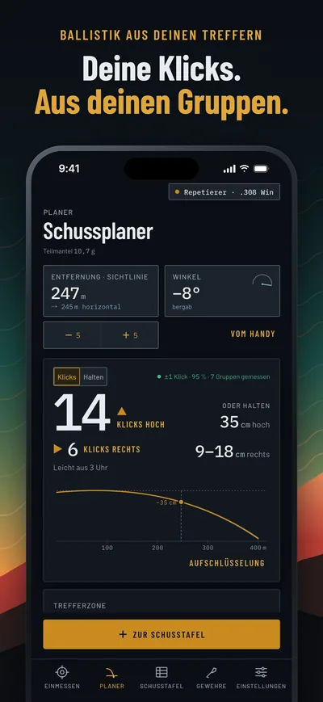
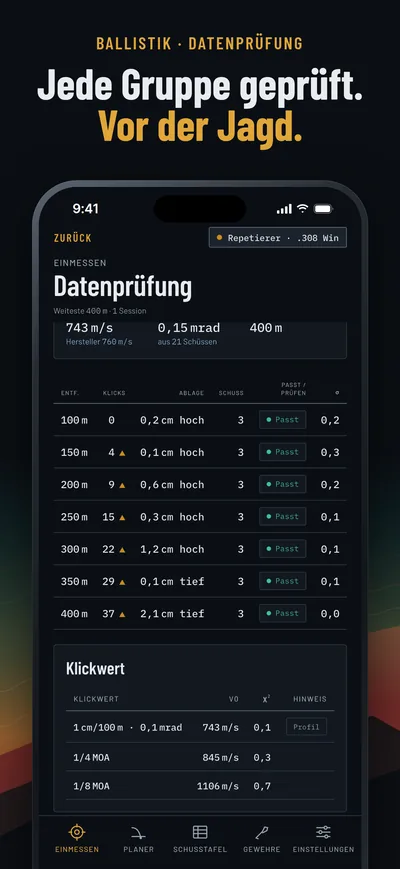
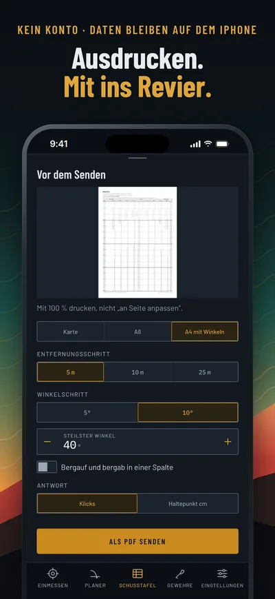

dropmeter
Gemessen, nicht gerechnet.
Die Ballistik-App für Jäger, die dem Schießstand mehr glaubt als der Formel.
Deine Klicks, aus deinen eigenen Gruppen
Schieß Gruppen auf ein paar Entfernungen, tipp die Treffer an, und dropmeter legt eine Flugbahn durch das, was du gemessen hast.
Jede Zeile sagt, was sie ist
Jede Entfernung auf der Schusstafel ist als verifiziert oder extrapoliert markiert, mit einem 95-%-Band aus deiner eigenen Streuung.
Schuss planen, Tafel drucken
Entfernung, Winkel, Wind, Temperatur und Luftdruck ergeben „14 Klicks hoch“ oder „35 cm hoch halten“. Die Tafel druckst du für den Zielfernrohrdeckel oder den Koffer.



Bald im App Store
Für das iPhone mit iOS 16 oder neuer. Deutsch und Englisch, metrisch oder imperial.
Kein Konto, kein Server, kein Tracking. Deine Daten bleiben auf deinem iPhone.